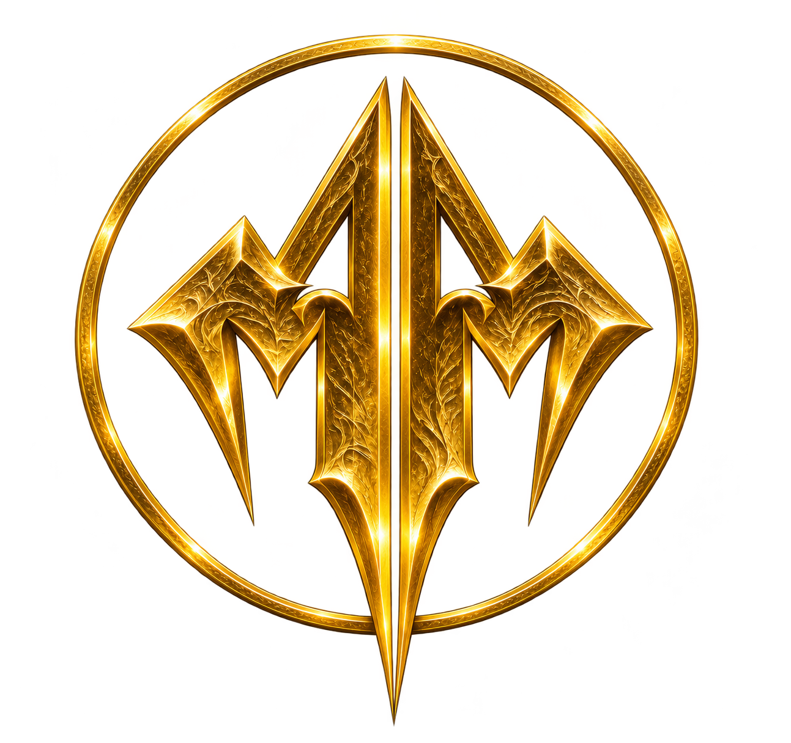

MUMANIACOS
Season 4 Custom
- Conteúdo expandido
- Progressão renovada
- Eventos exclusivos

MUMANIACOS ORIGINAL Jogar agora ↗MUMANIACOS ORIGINAL
Escolha sua jornada e reviva a era dourada do MU Online.
Escolher servidor ↓Selecione sua aventura
MUMANIACOS
Desde a era dourada
MuManiacos Original preserva a nostalgia e reúne jogadores que acreditam que os melhores momentos são feitos em comunidade.
Faça parte de uma guild
Entre na comunidade, acompanhe novidades e encontre seus companheiros de guerra.